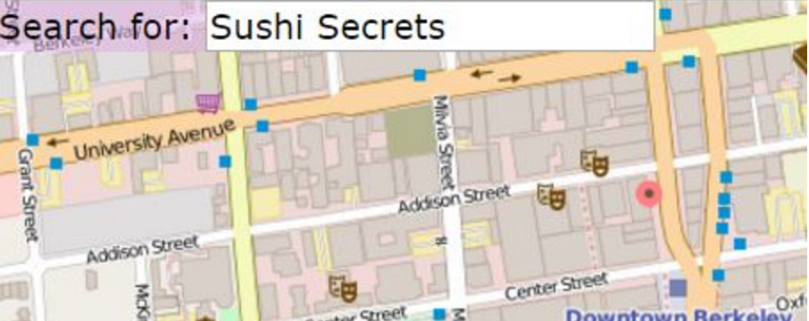
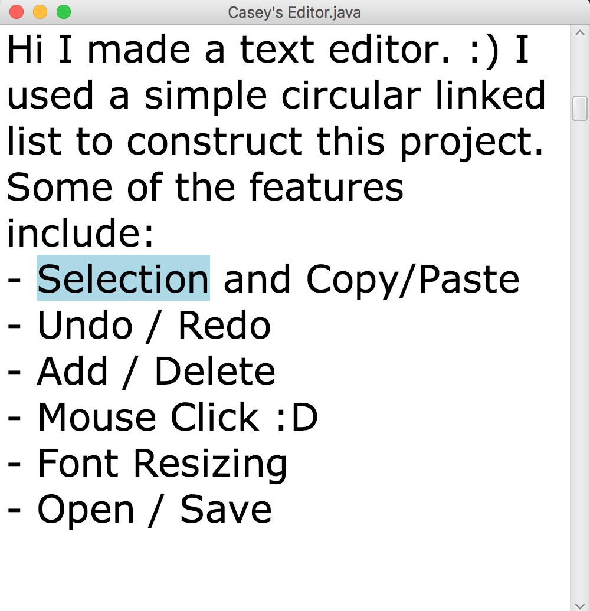
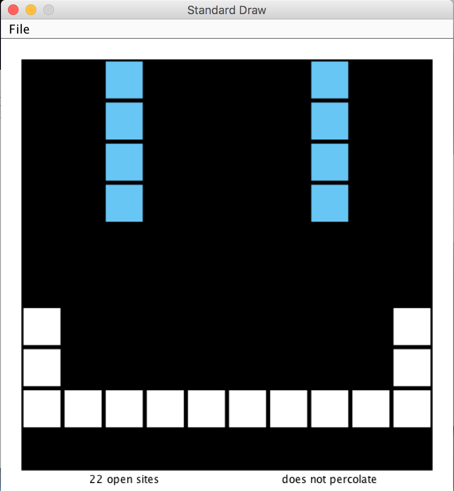

School Projects

Bear Maps
CS61B
The project was inspired by Google Maps: I wrote the back end and made graphics to the front end of the project. There are two major components to the project: rastering, the process of converting query requests into bit-mapped, pixel-by-pixel images, and routing, drawing the distance between two locations.
I used an A* algorithm to compute the shortests paths from one specific location to another. I've also done the gold points for this project, which were autocompletion and search. I learned how to modularize my data and to effectively apply my data structures!

Text Editor
CS61B
You're probably familiar with different text editors: some of them allow you to edit un-styled text (e.g., Notepad and TextEdit), and others have amazing features that allows for a perfect user friendly experience (e.g., Microsoft Word and Google Docs).
For this project, I implemented a basic text editor that can be used to open, edit, and save my text files.
My favorite part of this project was learning how to implement selection. I also learned from this project that even something simple to use can be quite a challenge!
Some of the various features also include:
- Changing background colors
- Changing font size
- Printing cursor positions.

Percolation
CS61B
Now let's say you're a clever scientist... Answer this! Given a complex system made up of randomly distributed materials, what fraction of the materials need to be metallic so that the system is an electrical conducotr? Wait here's another question! Given a permeable landscape with water on the surface, under what conditions will the water be able to drain through the bottom and gush through to the surface?
Stuck? Well these questions help defined an abstract process known as percolation. Percolation is a very interesting theory and I suggest to you that you should take a look at this project to find out more about it!
Key concepts in implementing Percolation include Weighted Quick Unions and Dynamic Programming.
Stuck? Well these questions help defined an abstract process known as percolation. Percolation is a very interesting theory and I suggest to you that you should take a look at this project to find out more about it!
Key concepts in implementing Percolation include Weighted Quick Unions and Dynamic Programming.